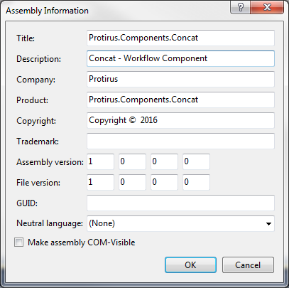

In this Article I'm going to explain how setup your environment for creating a Component.
Table of Contents
- List
- Setup (this)
- Simple Component
- Deploy
- Help File
- Logging
- Inputs
- Inspecting other Components
- Creating Globals
- Creating Project Properties
- Working with SQL
- Working with a Web Service
You will need Visual Studio, download a version if you haven't already.
A  Workflow Server to get the necessary DLLs.
Workflow Server to get the necessary DLLs.
Go to this server.
We need to get the necessary DLLs from the GAC (Global Assembly Cache)
C:\Windows\Microsoft.NET\assembly\GAC_MSIL\
This may not show a list of DLLs as the viewer is configured using a RegKey.
*Warning modifying the Registry can be dangerous, make sure you know what you're doing before you edit these. Take a copy first as a backup.
- Launch RegEdit.
- Navigate to HKLM\Software\Microsoft\Fusion
- Add a DWORD called DisableCacheViewer and set the value to 1.
Now search for 3 Libraries:
- LogicBase.Components.Default.dll
- LogicBase.Core.dll
- LogicBase.Framework.dll
Now we have the libs, we can create the VS project.
Start by creating a new  Class Library.
Class Library.
In the Project Folder add a new  Folder 'External Dependencies' (In Explorer)
Folder 'External Dependencies' (In Explorer)
Add the 3 Symantec libs
- LogicBase.Components.Default.dll
- LogicBase.Core.dll
- LogicBase.Framework.dll
Make sure these are the correct versions from the correct WF box i.e. 7.5 / 7.6 / 8.0.
Now in the VS Project
Right Click -> Add -> New Solution Folder
Add Existing Item -> Browse to the 3 DLLs and add them
 References -> Right Click -> Add Reference
References -> Right Click -> Add Reference
Expand Browse then right click Browse button
Go to this Folder and add the 3 DLLs again.
Update the  Properties, double click to open the window.
Properties, double click to open the window.
Click on Assembly Information,
Add the Description and Company info - this is used in the Component within Workflow.

Check the Target Framework for .NET in Properties.
Now back to the .cs file that was created.
Rename this to the name of your component - i.e.  Concat.cs
Concat.cs
Add the using for the new namespaces
using LogicBase.Core;
using LogicBase.Core.Data;
using LogicBase.Core.Data.DataTypes;
using LogicBase.Core.PropertySheets;
using LogicBase.Framework;
using LogicBase.Core.Data.TypeEditors;
using System.ComponentModel;
We also need to add a couple of .NET References for
System.Drawing
System.Drawing.Design
Then add a using statement
using System.Drawing.Design;
Next add an Image to the project (Protirus.Workflow.Protirus.png), this will be the Component image,
Change the Build Action to Embedded Resource
You could use images from WF:
[Install Drive]:\Program Files\Symantec\Workflow\Designer\Images\
- general
- processmanager
Next we want to add some metadata to the project.
This can be done between the namespace and the public class
/// <summary>
/// Custom component for joining two strings.
/// </summary>
///
[Serializable,
ComponentCategory("Protirus"),
ComponentImage("Protirus.Workflow.Protirus.png"),
ComponentName("Protirus Concat"),
ComponentDescription("This component joins two Strings."),
ComponentHelp("http://www.protirus.com/components/"),
ComponentUsage("Requires two strings."),
ComponentExample("String a = 'Hello' String b = 'World', this will return 'Hello World', if Add Space is True."),
ComponentPublisher("Protirus", "www.protirus.com")]
[PropertyPageOrder("General", "Configuration", "Settings")]
Not all properties are used in the component and will need to update in the corresponding .libconfig file.
These are located:
[Install Drive]:\Program Files\Symantec\Workflow\Designer\Help\
I'll explain how to create/update these in a later tutorial.
Now we need to conform to some protocols for the components to be useable in Workflow.
Extend the Class
public class Concat : AbstractSinglePathProcessComponent, ISinglePathDataAdded
Now implement the required methods.
First "AbstractSinglePathProcessComponent"
public override void Run(IData data)
{
}
public override void ReadFromStream(ObjectReadStream info)
{
}
public override void WriteToStream(ObjectWriteStream info)
{
}
And the "ISinglePathDataAdded"
public DataDefinition[] GetAddedData()
{
}
Now we have all the necessary method stubs but nothing actually happens, onto the next Article Simple Component to create a working item.